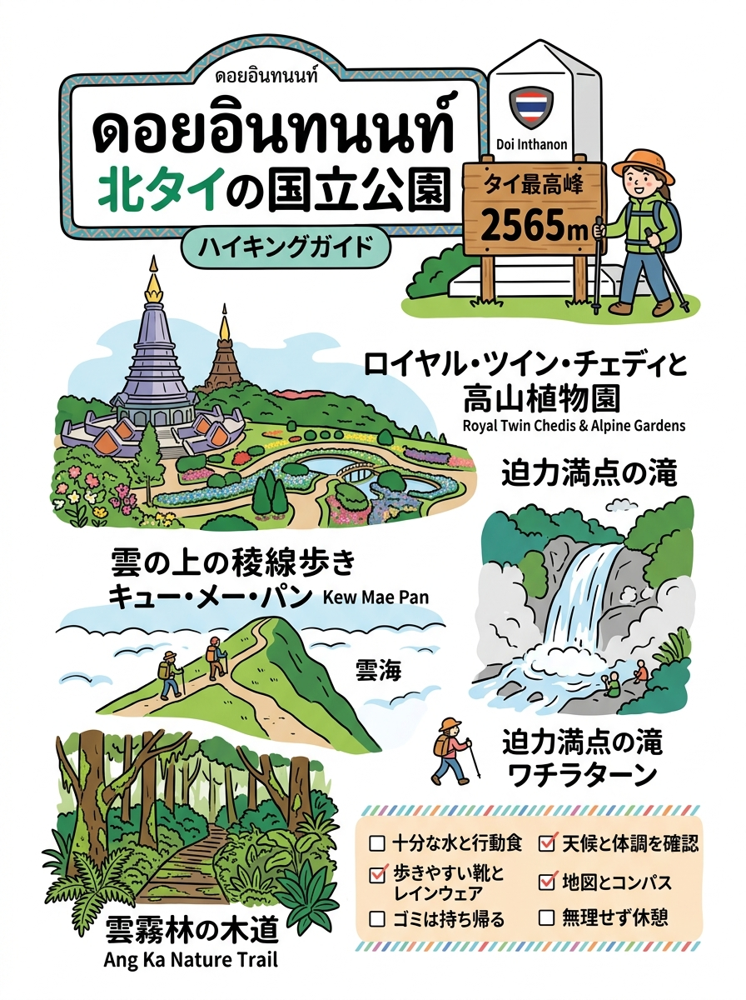

01
ドイ・インタノン国立公園（อุทยานแห่งชาติดอยอินทนนท์ / Doi Inthanon）
キウメーパーン自然遊歩道（雲海とシャクナゲ）、アンカー寒冷湿原木道、国王・王妃記念双塔、ワチラターン大瀑布
タイ最高峰ドイ・インタノン（チェンマイ）をはじめとする北タイの標高高い自然公園ガイド。
クリックすると拡大して詳細を確認・印刷できます。

旅行者の持ち歩き・印刷に適した手書き風インフォグラフィック。
現地調査および公的データに基づく最新詳細情報。
キウメーパーン自然遊歩道（雲海とシャクナゲ）、アンカー寒冷湿原木道、国王・王妃記念双塔、ワチラターン大瀑布
山頂稜線パノラマトレイル（360度大雲海・日の出）、ファーン天然間欠泉温泉（高さ30m噴出・個室風呂・足湯）、タートモーク滝
ユネスコ生物圏保存地域（2021年認定）。亜高山帯固有高山植物（チョンプーチェンダオ）、保護動物ゴーラル、山頂カルスト稜線美
天を指す尖角の断崖絶壁から望むメコン川盆地とラオス国境の大雲海・黄金の日の出、野生ヒマラヤ桜（シーチョンプー）並木
タイ最長鉄道トンネル（クンターントンネル・1,352m）直結駅、4つの展望ステージ（Y.1〜Y.4別荘遺構・松林・最高峰パノラマ）
岩場から73〜80℃の熱湯が湧き出る天然露天温泉群（温泉卵体験）、ミネラル温泉浴場・足湯、清流のチェーソーン9段滝
世界で唯一自生する幻の花「チョンプー・プーカー（2月中旬ピンク開花）」、古代巨大ヤシ「タオ」、標高1,715m絶景展望台・満天星空
黄金の聖仏塔ワット・プラタート・ドイ・ステープ、プーピン王室離宮（高山花卉園）、モン族クンチャーンキアン村（桜のトンネル）